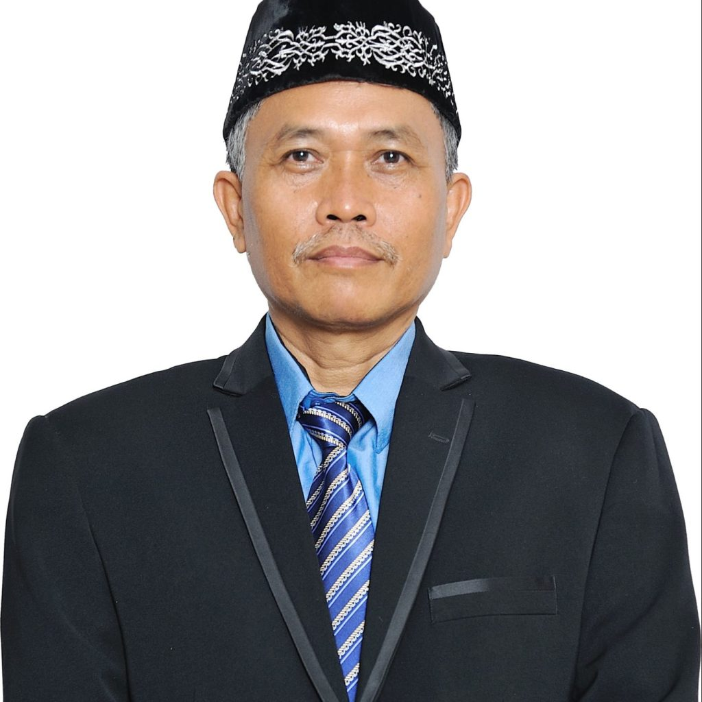

Profil SMK Negeri 2 Cilegon
SAMBUTAN KEPALA SEKOLAH
|  | SMK Negeri 2 Cilegon dalam perkembangannya melalui berbagai macam halangan dan rintangan yang tidak mudah. Namun, bersyukur dengan SDM yang mumpuni, baik dari Tenaga Pengajar yang Kompeten dan Tenaga Administrasi yang mampu menjalankan tugas dengan sebaik-baiknya, Sekolah kami bisa terus berkembang menjadi lebih baik.
Melalui berbagai macam program yang ada, baik SPMI, Kerjasama dengan perusahaan, ESD for School, dan ragam kegiatan kesiswaan Ekstrakulikuler dan OSIS, membuat nuansa pembelajaran di SMK Negeri 2 Cilegon menjadi lebih dinamis dan berkesinambungan.
|
Visi, Misi, & Motto SMK NEGERI 2 CILEGON
Visi SMK Negeri 2 Cilegon |
Misi SMK Negeri 2 Cilegon |
Mewujudkan Lulusan yang “Unggul” dan “Terpercaya” dalam mengembangkan dan mempersiapkan tenaga terampil yang beriman, bertaqwa, cerdas, percaya diri, berwawasan global, dan berkarakter Pancasilais. |
|
Motto SMK Negeri 2 Cilegon |
|
“IF BETTER IS POSSIBLE, GOOD IS NOT ENOUGH“
|
|